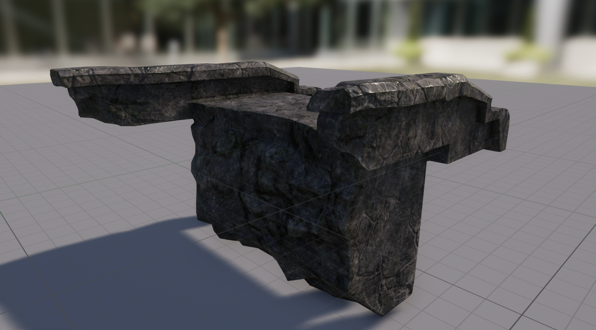

The props used in the environment serve primarily as story telling aspects of the scene, as there isn't any story being directly conveyed to the viewer i wanted to at least place in some environmental storytelling so viewers can appreciate the scene at face value or can dig a little deeper and find some bits of story told here and there.
Bridge untextured

Bridge applied with rock texture
Pillar untextured
Pillar with rock/moss texture
Lantern untextured
Lantern with rock texture
Platform untextured
Platform with rock/moss texture
Snake totem untextured
Snake totem with rock/moss texture
Stone totem untextured
Stone totem with stone texture
Character
I wanted a character that would fit into the environment but still inching in a sense of being out of place. The characters design is lifted in a mix between western medeival armor tropes for practicality and more traditional eastern style for the cloth portions, the reason the character is masked is mostly due to time constraints of the project that i am unable to properly face-rig the character for animation.
Character front
Character back
Character side
Character head
Character maskless
_
Environment
For the environment i wanted to do a cliffside scene with a hint of magcal flair to it, as seen by the floating rocks, what the demo lacks in gameplay i aim to make up for with impressive visuals, i want the viewer to walk through the scene and notice the subtle storytelling amidst this peaceful ruin.